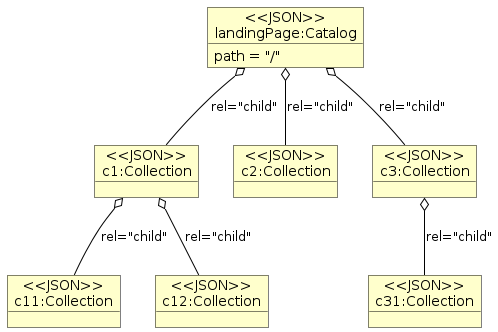
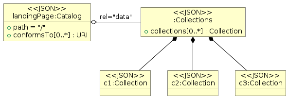
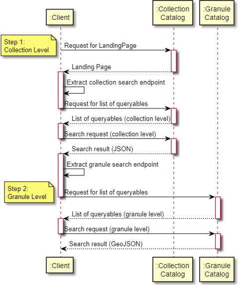

Previous | Table of contents | Next
5. Collection Catalog Best Practices#
5.1 Overview#
STAC implementations may provide the corresponding collection metadata information as a static collection catalog (landing page with a hierarchy of collections referenced with rel=”child”), as a flat list of collections (rel=”data”) or via a collection catalog with collection search interface. The current chapter presents the requirements and recommendations that apply to STAC collection catalogs in addition to the general catalog requirements presented in Catalog Best Practices.
5.2 Collection catalog without search interface#
EO collections represented as STAC collections can be made available as a STAC Catalog in different ways as depicted below:
Through a hierarchy of catalogs or collections with the rel=”child” relation.
As a list of collections available via the rel=”data” relation.
 |
|---|
Method 1: Using rel=”child” |
 |
|---|
Method 2: Using rel=”data” |
Implementations may combine both mechanisms and allow the same EO collection to be found via the collection hierarchy or the collection list. Implementations intending to support collection search are to support at least Method 2 and the corresponding endpoint.
Note: When publishing a single collection, the collection and the landing page may be combined in a single JSON file.
5.3 Collection catalog with search interface#
CEOS-STAC-CREQ-5320 - Collections endpoint [Conditional]
A CEOS STAC catalog supporting collection search shall advertise the search endpoint for collections in the landing page with rel=”data” (most often
/collections), type=”application/json” and declare the corresponding collection search conformance classes in the landing page. See “STAC API Collection Search” [AD07].
The above endpoint is further referred to as the collections endpoint.
Conformance encoding example
"conformsTo": [
"http://www.opengis.net/spec/ogcapi_common-2/1.0/conf/collections",
"http://www.opengis.net/spec/ogcapi-common-2/1.0/conf/simple-query",
"http://www.opengis.net/spec/ogcapi-records-1/1.0/req/cql-filter",
"https://api.stacspec.org/v1.0.0-rc.2/collection-search",
"https://api.stacspec.org/v1.0.0-rc.2/collection-search#filter",
"https://api.stacspec.org/v1.0.0-rc.1/collection-search#free-text",
"http://www.opengis.net/spec/cql2/1.0/conf/cql2-text",
"http://www.opengis.net/spec/cql2/1.0/conf/basic-cql2"
]
5.3.1 Collection search request#
/collections is typically used for the above endpoint, but this is not required.
Search parameters#
CEOS-STAC-REQ-5340 - Supported search parameters [Requirement]
The STAC-API and OGC API-Features specifications define a list of fundamental search parameters. From these specifications, a CEOS STAC collection catalog shall support the following minimum set of search parameters for “collection” search at the collections endpoint:
limitbboxdatetime
CEOS-STAC-REQ-5360 - Free text search [Requirement]
For supporting free text searches, a CEOS STAC collection catalog shall advertise support for the HTTP query parameter
qas in “STAC API Collection Search” [AD07].
CEOS-STAC-CREQ-5370 - Collection queryables [Conditional]
A CEOS STAC collection catalog supporting additional queryables for collection search shall return the link to the Queryables object with the list of queryables that can be used in a filter expression via a link object in the collection search response with rel=”http://www.opengis.net/def/rel/ogc/1.0/queryables” and type=”application/schema+json” (See also “STAC API Collection Search” [AD07].
5.3.2 Collection search response#
CEOS-STAC-REQ-5372 - Collection search response representation [Requirement]
A collection search response shall be represented as a JSON object according to the “STAC API - Collection Search” [AD07].
Search-by-id makes the following use cases possible:
The ability to provide a link pointing to a single catalog item (using a URL) on a web page that illustrates a particular event (e.g. an earthquake in the Himalayas).
The ability to bookmark and retrieve a single item.
CEOS-STAC-REQ-5374 - Collection search response representation [Requirement]
Collections included in a collection search response shall be represented according to the “CEOS STAC Collection Metadata Best Practices”.
5.3.3 Two-step search#
Traditionally, we have partitioned data into hierarchies for organizational purposes. The notion of datasets and files or collections and granules allows us to group similar assets to ease the archival and curation of data.
This hierarchy can also be leveraged for discovery purposes. A general use case for discovery is to find a measurement (sea surface temperature, NDVI etc.) associated with a spatial and temporal area of interest. Querying a large archive in such a manner would potentially yield a large number of results with a low precision. This is because the measurement clause of our query can often yield low precision results.
Generally, these query parameters map successfully to explicit parts of our data’s organizational hierarchy. Measurements are generally defined at the collection level and spatial and temporal extents at the granule level.
Furthermore, measurement query precision is low while spatial-temporal querying of files is high.
Example: A sea surface temperature query yields 100 possible collections and each one of those had 500 granules in the area of interest we have 50K results to assess. If only 10 of those collections had the correct form of sea surface temperature then we have 40K invalid results that need to be checked.
If we break up the search into a collection search then a granule search then we have as follows,
A sea surface temperature query yields 100 possible collections. Only 10 of those results are correct so only 90 invalid results nee to be checked. Then a granule search is performed for each of the 10 correct collections. Since spatio-temporal searching of files yields high precision the confidence in those results is also high.
This is why many earth science search engines offer a two-step search mechanism. It decreases the risk of low precision results.
For search federation we exploit the two-step mechanism in another way. Collection searches are resolved at a centralized repository that contains the collection-level metadata of all participating agencies and organizations. The results of such searches embed file-level search endpoints at the agency/organization responsible for the data of that collection.
The collection search occurs at the centralized repository and the granule searches occur at the federated repositories.
The two-step search consists of a collection level search and the subsequent granule level search (or file-level search).
 |
|---|
Two Step Search |
In order to provide a well-defined search path from a collection of interest to granules associated with that collection, we advocate the use of two-step searching leveraging the following:
Link elements of relation items (rel=’items’) within collection entries. These links point to a granule-level endpoint specific to the collection entry.
Link elements of relation queryables (rel=’queryables’) within collection entries. These links point to available granule-level search parameters specific to the collection entry.
Granule level interface descriptions (i.e. endpoints and sets of search parameters) that can be tailored to a specific collection.
The advantages of this approach are as follows:
A client can navigate from collection to granule with only an understanding of the STAC specification.
A server links between collections and granules exploiting the relation between a STAC Collection and a STAC Item.
It allows the client to determine what search parameters are available to the user at the granule level using the /queryables response.
CEOS-STAC-REC-5392 - Support for granule search [Recommendation]
Collections supporting granule search should contain a link with rel=”http://www.opengis.net/def/rel/ogc/1.0/queryables” and type=”application/schema+json” in the STAC collection representation returned by the collection search.
CEOS-STAC-REQ-5393 - Support for granule search [Requirement]
STAC Granule Catalogs shall advertise all “additional” collection specific search/filter parameters applicable for a granule search within a collection (if any) in the corresponding queryables object for that collection and not rely on a global set of queryables applicable to all collections made available via a link with rel=”http://www.opengis.net/def/rel/ogc/1.0/queryables” from the landing page (typically “/collections/{collectionId}/queryables” instead of “/queryables”), to be combined with a collection-specific set (which may be empty).